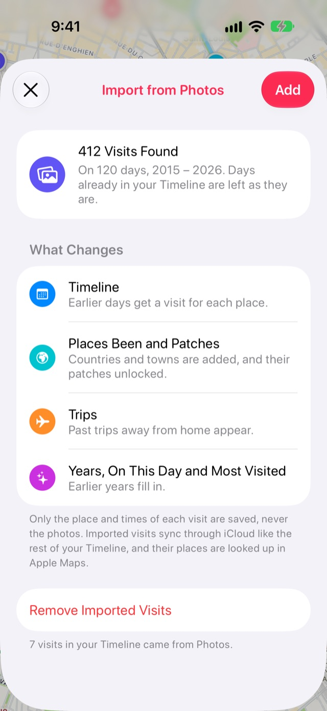

Como preencher suas viagens passadas com as suas fotos
Sua fototeca já sabe por onde você passou. O Stops pode ler o local e a hora das suas fotos e transformá-los em visitas passadas, para que viagens, cidades e países de antes do Stops apareçam sozinhos. E as fotos que você tirou num lugar aparecem bem ali.
- Stops Pro
- Alguns minutos
- iPhone e iPad
Do que você precisa
- Linha do tempo ativada no Stops: abra o Diário e ative a Linha do tempo.
- Stops Pro.
Passo a passo
-
Abra a importação
Abra o Diário pelo botão do livro no fim da barra de abas e toque na engrenagem de Ajustes. Escolha Importar, depois Visitas do app Fotos.

-
Busque visitas
Toque em Buscar visitas e permita o acesso às suas fotos. O Stops procura na fototeca lugares onde você tirou duas ou mais fotos ou vídeos.
-
Revise o que foi encontrado e adicione
O Stops mostra quantas visitas encontrou e em quais anos. Os dias que já estão na sua Linha do tempo continuam como estão. Toque em Adicionar.

Bom saber
- Só o lugar e os horários de cada visita são salvos. Suas fotos nunca são copiadas, armazenadas ou enviadas.
- Depois os lugares recebem nome pelo app Mapas, e um cartão Criando seu diário mostra o progresso.
- Para desfazer, a mesma tela tem Remover visitas importadas.
Mais guias
Baixe o Stops
Todo lugar que vale uma parada, no iPhone, iPad, Mac e Apple Watch.